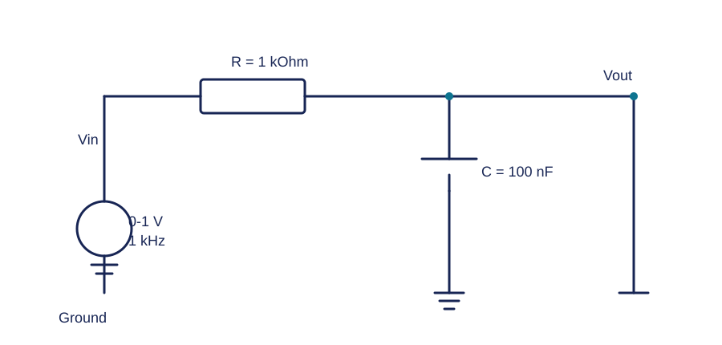
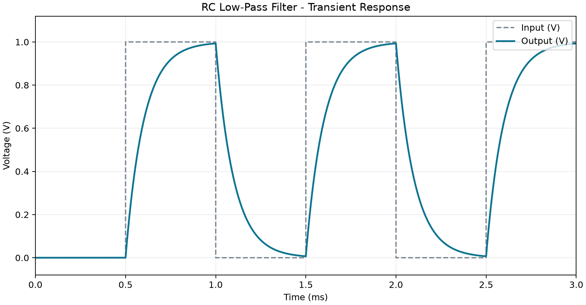
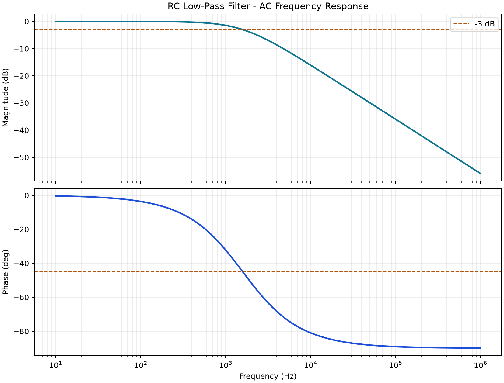
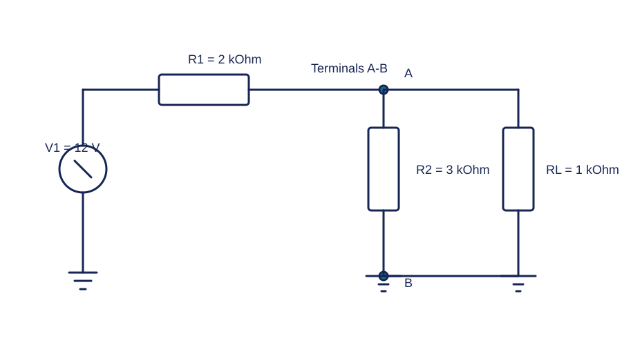
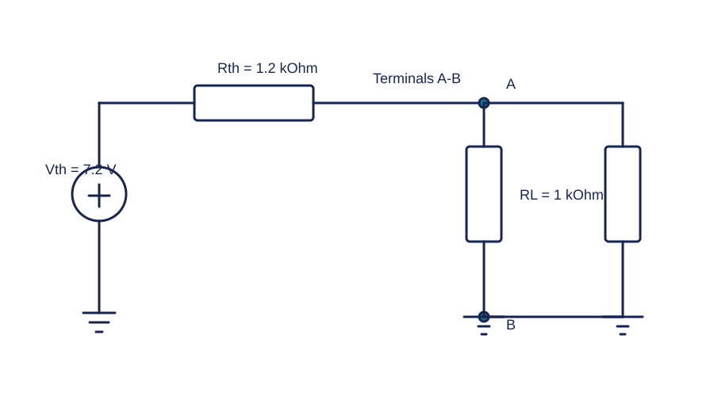
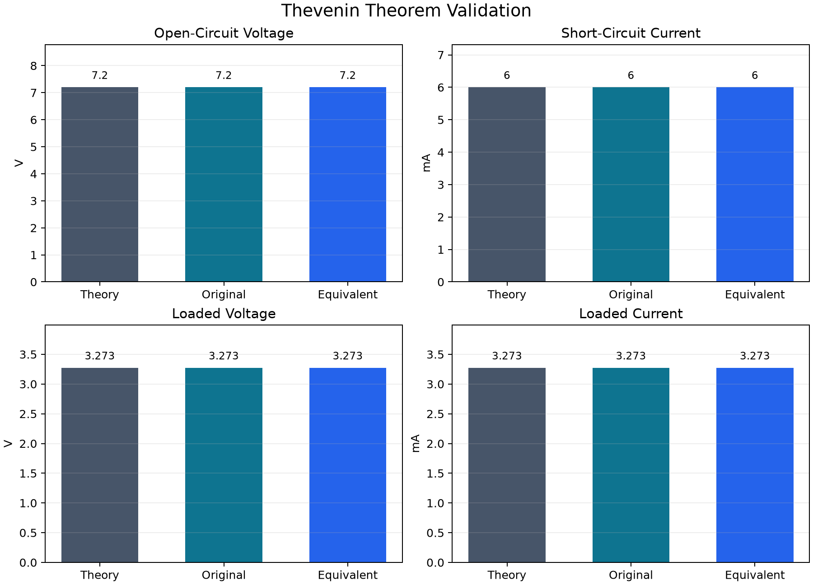
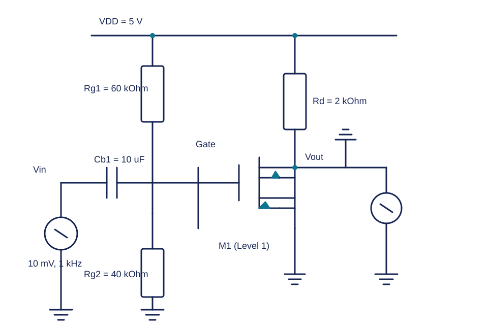
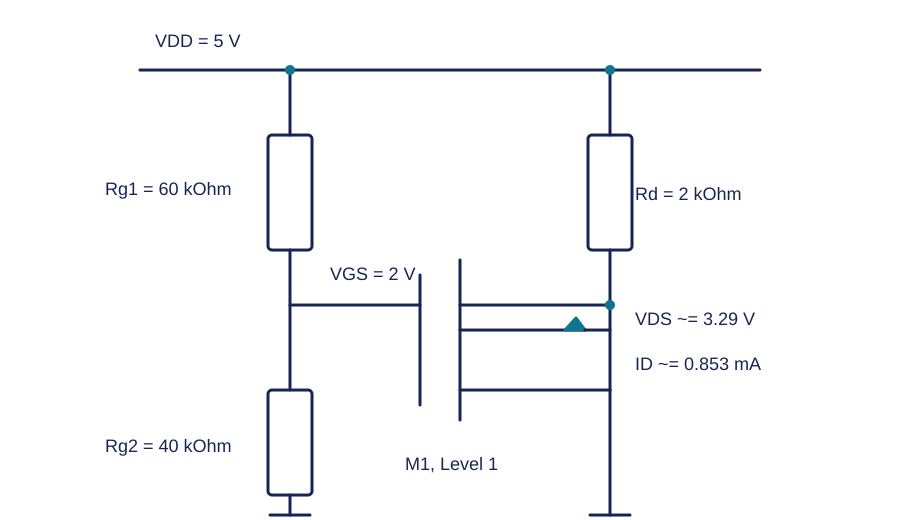
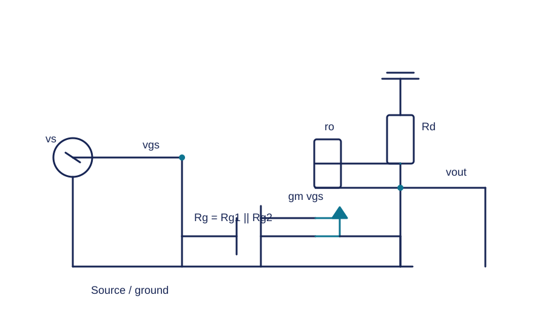
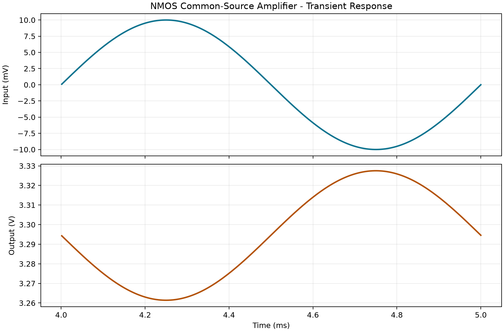

建立电路模型
固定题目参数，建立原电路、等效电路或交直流分析模型，并生成可编辑 SVG 电路图。
Python · PySpice · Ngspice
用可复现的 Python 脚本完成三个进阶电路实验：先手算理论值，再调用 Ngspice 仿真，最后自动比较误差。 每一组结果都保留电路图、关键公式、数据表和波形图，方便复核与讲解。
P2 没有只截取“看起来正确”的波形，而是把理论计算写进每个脚本，再从仿真数据中自动提取关键指标并计算相对误差。
固定题目参数，建立原电路、等效电路或交直流分析模型，并生成可编辑 SVG 电路图。
根据 RC、戴维南定理或 Level 1 MOS 平方律公式计算关键电压、电流、增益和工作点。
通过 PySpice 调用 Ngspice，提取仿真结果并按预设容差输出 PASS/FAIL，结果可重复生成。
用 1 kHz 方波观察充放电过程，再用 10 Hz–1 MHz 交流扫描确认截止频率。该实验验证了时间常数与频率响应的对应关系。

时间常数由电阻和电容共同决定，截止频率是幅值下降到 1/√2（约 −3 dB）时的频率。
τ = RC = 100.000 μs fc = 1 / (2πRC) = 1591.55 Hz| 参数 | 理论值 | 仿真提取值 | 相对误差 | 结论 |
|---|---|---|---|---|
| 时间常数 τ | 100.000 μs | 99.999 μs | ≈ 0.001% | PASS |
| 截止频率 fc | 1591.55 Hz | 1591.56 Hz | ≈ 0.001% | PASS |


分别仿真“原始网络”和“戴维南等效网络”，比较开路电压、短路电流以及接 1 kΩ 负载后的结果，验证端口外特性等价。


移去负载后，端口电压由 12 V 经 2 kΩ 与 3 kΩ 分压得到：Vth = 12 × 3 / (2 + 3) = 7.2 V。
独立电压源置零后，从端口看进去为 2 kΩ 与 3 kΩ 并联：Rth = 1.2 kΩ。
由 Isc = Vth / Rth 可得 7.2 V ÷ 1.2 kΩ = 6 mA，用于交叉验证等效参数。
| 端口指标 | 原始网络 | 等效网络 | 差异 | 结论 |
|---|---|---|---|---|
| 开路电压 Voc | 7.200000 V | 7.200000 V | 0.000000% | PASS |
| 短路电流 Isc | 6.000000 mA | 6.000000 mA | 0.000000% | PASS |
| 带载电压 VL | 3.272727273 V | 3.272727273 V | 0.000000% | PASS |
| 带载电流 IL | 3.272727273 mA | 3.272727273 mA | 0.000000% | PASS |

电路采用 Level 1 NMOS 模型。除理想平方律结果外，还给出包含沟道长度调制系数 λ 的修正理论值，避免把模型差异误判为仿真错误。

NMOS 参数严格采用：K = 0.8 mA/V²，Vth = 1 V，λ = 0.02 /V，Cb1 = 10 μF。
SPICE Level 1 参数的 kp 与题目平方律系数不同：在 W/L = 1 时，脚本使用 kp = 2K = 1.6 mA/V²。


| 指标 | 理想平方律 | 含 λ 修正理论 | SPICE 仿真 |
|---|---|---|---|
| 栅源电压 VGS | 2.0000 V | 2.0000 V | 2.000000 V |
| 静态漏极电流 ID | 0.8000 mA | 0.8527 mA | 0.852713 mA |
| 漏源电压 VDS | 3.4000 V | 3.2946 V | 3.294574 V |
| 跨导 gm | 1.6000 mS | 1.7054 mS | 1.705426 mS |
| 输出电阻 ro | 62.500 kΩ | 58.636 kΩ | — |
| 电压增益 |Av| | 3.1008 | 3.2984 | 3.305052 |
相对含 λ 修正理论值，低于 10% 验收上限。
输入与输出相关系数，确认反相放大。
输出波形与理想正弦拟合残差很小，无明显失真。
VDS = 3.2946 V，大于 VGS − Vth，偏置条件合理。

为什么不能只对比“理想值”：题目给出的 λ = 0.02 /V 会带来沟道长度调制。仿真使用含 λ 的 Level 1 模型， 因此静态工作点和增益应主要与 λ 修正理论比较；理想平方律结果仍保留作入门公式参考。
三个脚本都在本地使用 Python 3.12、PySpice 与 Ngspice 运行通过；结果图由脚本重复生成，不依赖人工填表。
| 电路 | 核心验收条件 | 实测表现 | 结果 |
|---|---|---|---|
| RC 低通滤波 | τ 与截止频率误差不超过 5%，波形无明显异常 | 两项误差均约 0.001% | PASS |
| 戴维南定理 | 原电路与等效电路在开路、短路和带载下误差不超过 1% | 差异约 0.000000% | PASS |
| NMOS 共源级 | 工作点与 gm 误差不超过 5%，增益误差不超过 10% | 增益误差约 0.2032% | PASS |